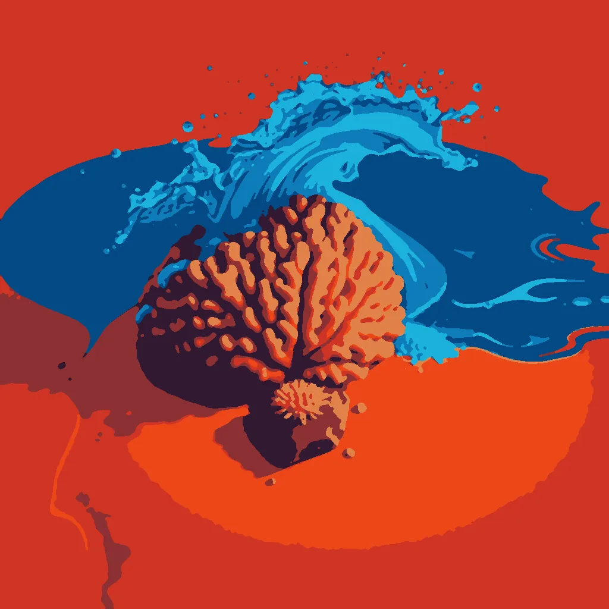

First Light ·
a coral frag on its rock waking as its polyps open under the lamp, one great coral head waking on the reef at dawn as the tide pours over it
The glass holds warm water, clear and still. Under the overhead lamp, a single stem uncurls its pink lips. Tiny mouths stretch wide to catch the sudden glow. They ripple outward, a fan of wet velvet spreading against stone. Each polyp drinks, then seals its rim tight against the current. The tank hums with silent life as morning light climbs higher. Far beyond the wall, the real sea stirs in gray and green.
A massive head rises from the sand where shadows end. Tide water rushes up its spiraled arms in a heavy rush. Sunlight breaks over the horizon line, hitting wet limestone. Huge branches heave upward, drinking saltwater poured from the sky. The reef breathes out steam and fills with motion so vast no tank could hold it. Water cascades down one side while new growth opens on the other. It wakes fully, filling the frame with pink and brown and white.
How this piece was made
- 01Poem written byQwen3.5 9B recorded
Local model on one RTX 3070 Ti. Until 11 October 2026 the same model scored its own drafts and wrote new ones.
- 02Image brief written byQwen3 8B recorded
Local model. It reads the poem and writes the subject part of the picture brief. Code writes the rest.
- 03Image rendered byFLUX.1 [schnell] recorded
Local image model on the same graphics card. It draws several candidates. Before judging, code crops each one and flattens it to at most eight colours, so the image shown is not the raw render.
- 04Image chosen byClaude Opus 5.5 recorded
Claude, working as c01corp’s art critic. It scores each candidate blind, without seeing the poem or the other candidates.
- Poem drafts
- 5 of 5
- Poem self-score
- 6/10
- Image candidates
- 4
- Judge’s score
- 5/10
- Selection
- Highest-scoring candidate that matched the subject. It did not clear the judge’s bar.
The image brief
Code wrote everything before “The subject:”. The local model wrote the part after it. When the chosen picture was a redraw, the judge’s notes on what to fix were added to the end of this brief and are not shown here.
A bold flat-colour screen-print poster of one great coral head waking on the reef at dawn as the tide pours over it, and small and crisp in front of it, a coral frag on its rock waking as its polyps open under the lamp. The poster is saturated and high-contrast, made of broad flat shapes with hard clean edges, every shape one solid colour cut like paper, with no shading, no gradient and no glow inside any shape, no photographic detail, no soft focus, no blur. Two colours own the whole image: a field of warm sand, ochre and rust, and cobalt blue for the moving water and nothing else. Seen from high above: the event itself, HUGE, fills more than half of the image and runs out of the frame, caught in the middle of happening and thrown across the picture on a diagonal, with streaks, spray, sparks or beams. The whole image is one continuous scene from edge to edge. Behind the main form one wide flat area of unbroken ochre rests the eye. Small things are crisp silhouettes. The subject: A massive coral head rises from sand, its spiraled arms pouring cobalt blue tide water upward, splitting the reef’s ochre sand. The frag’s pink polyps cling to stone, glowing faint cobalt as dawn light hits limestone. A flat ochre field stretches behind, vast and still, while the coral’s branching limbs surge diagonally, catching the sun’s first light.